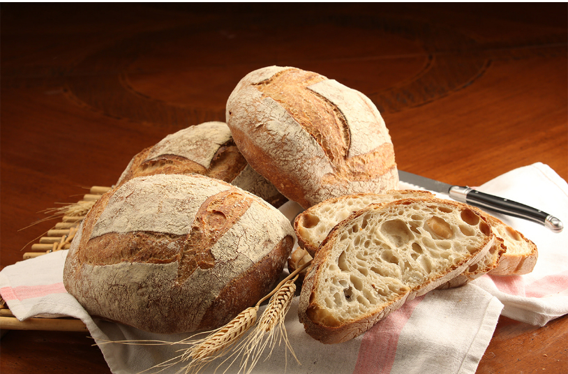
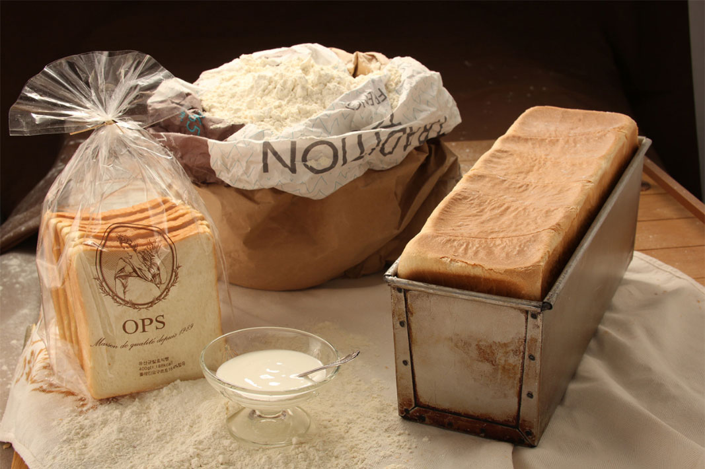
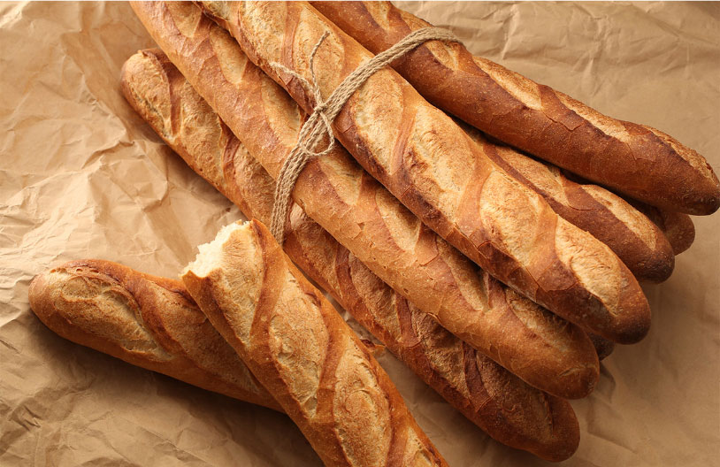
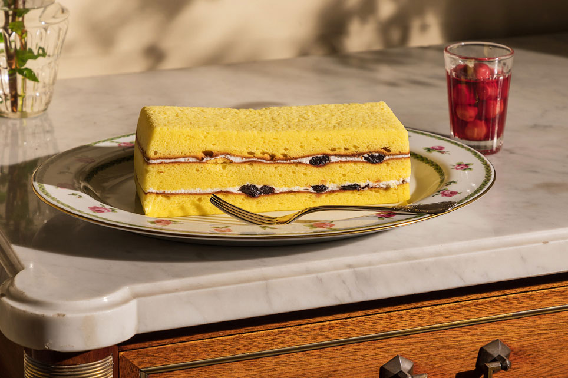
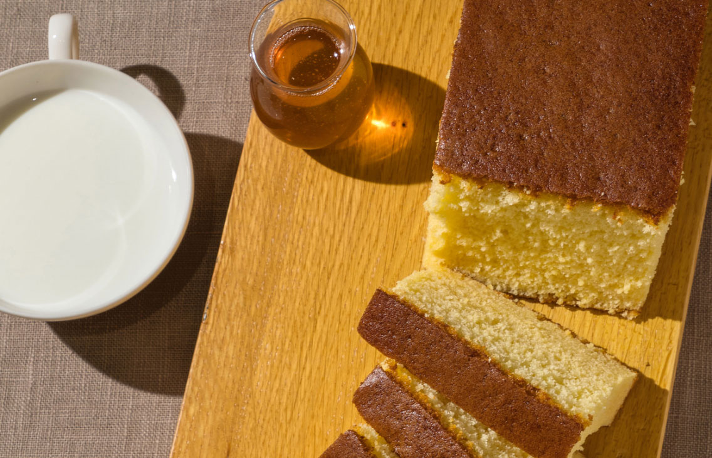
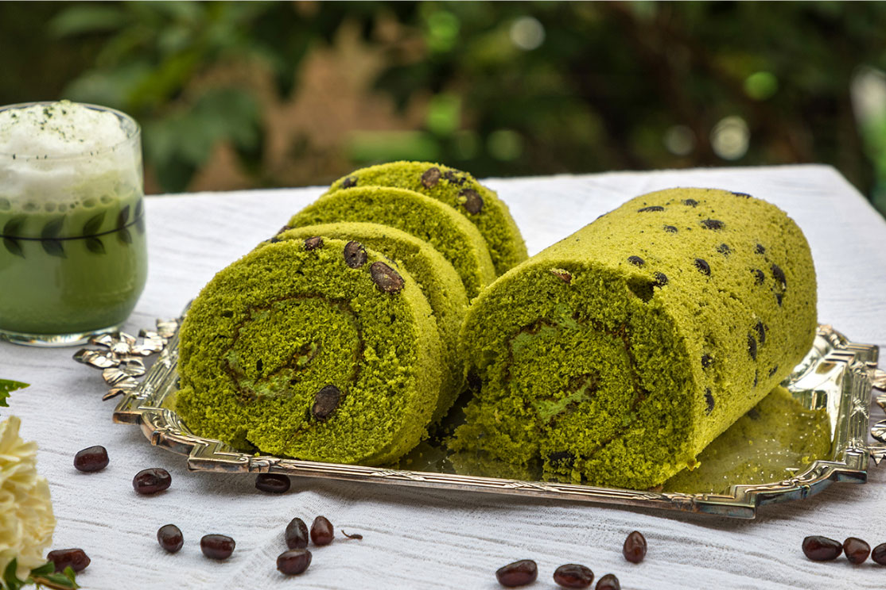
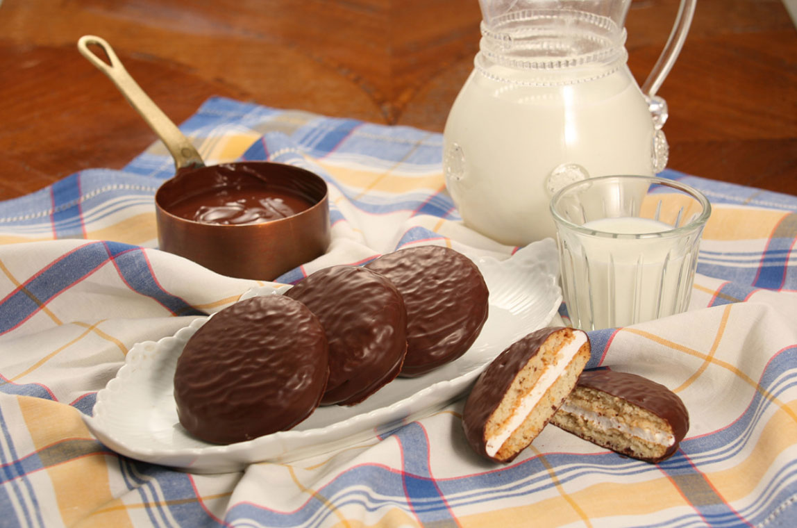
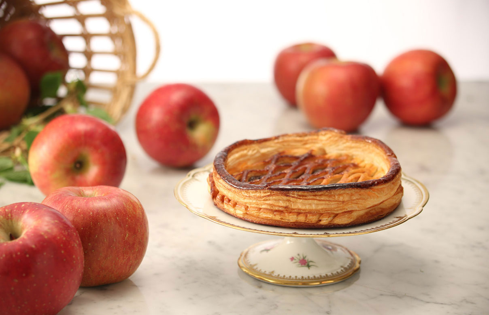
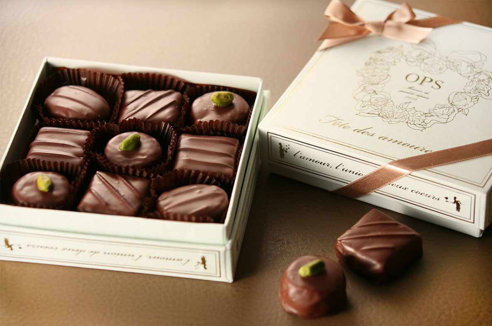

-

로데브
겉은 바삭한 하드 타입이지만 속살은 수분이 많아 촉촉하면서
부드러워 샌드위치를 만들기에 좋은 프랑스 남부지방의
전통빵입니다.
-

유산균 발효 식빵
장시간 숙성된 유산균으로 만들어 부드러운 식감이 특징입니다.
특유의 산미와 향기가 은은하고 부드럽고 촉촉한 밀크의 풍미가 가득
퍼집니다.
-

바게뜨
'지팡이' 이라는 뜻의 이름을 가진 바게트입니다. 스틱형의 프랑스
빵 중 가늘고 긴 편이며, 바삭한 크러스트와 담백함이 특징인
바게트입니다.
-

가또 무쓸린
새콤달콤한 체리 맛과 크림의 부드러움과 산뜻함이 조화롭게 잘
어울리는 케이크입니다. 프랑스 사부아 지방의 가토 사부아와 비슷한
구운 과자이며 전통 기법을 그대로 지켜 만든 만큼 맛과 세월의
깊이를 제대로 느끼실 수 있습니다.
-

카스텔라
카스테라는 일본에서 시작한 스펀지 케익의 일종이며 부드럽고
촉촉한 식감과 고소한 우유가 잘 어울리는 부드러운 케익입니다.
옵스 카스테라는 국산 꿀과 신선한 계란의 맛이 어울려 온화한
달콤함이 입안 가득 퍼지는 정통 카스테라입니다.
-

말차롤케익
부드러운 시트와 촉촉한 크림이 돌돌 말린 특유의 단면을 가진
롤케이크, 새로운 디저트 트렌드로 떠올라 기본의 케이크와는 다른
매력으로 인기가 있습니다. 고급 말차와 팥이 어우러진 옵스만의
말차롤케익을 만나보세요.
-

뚜쇼꼬
고소한 비스켓에 은은한 바닐라 향이 매력적인 부드럽고 쫀득한
마쉬멜로우를 듬뿍 샌드하고 고소한 수제 초콜릿으로 겉을 감싸
만들었습니다.
-

애플파이
파삭한 파이 속에 엄선한 사과로 옵스의 셰프가 손수 만든 맛있는
타탕 사과를 풍성히 넣어 새콤 달콤한 사과향과 파이의 파삭한
질감이 아주 잘 어울리는 정통 프랑스식 파이 입니다.
-

코르테스
옵스에서 직수입한 이태리산 아몬드와 헤이즐넛, 파스타치오, 오렌지
꽁피 등 고급 견과류를 넣어 만든 프랑스 전통 수제 초콜릿입니다.